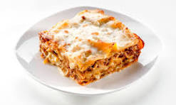

Layered Lasagna

Lasagna is a classic Italian dish made with layers of pasta, meat sauce, ricotta cheese, and béchamel sauce. It's hearty, comforting, and perfect for a special occasion or a weeknight meal. Here's a recipe for a delicious layered lasagna:
Ingredients:
For the meat sauce:
- 1 tablespoon olive oil
- 1 onion, chopped
- 2 cloves garlic, minced
- 1 pound ground beef
- 1 (28-ounce) can crushed tomatoes
- 1 (6-ounce) can tomato paste
- 1/2 teaspoon dried oregano
- 1/2 teaspoon dried basil
- 1/4 teaspoon salt
- 1/4 teaspoon black pepper
For the béchamel sauce:
- 3 tablespoons butter
- tablespoons all-purpose flour
- cups milk
- 1/2 teaspoon salt
- 1/4 teaspoon black pepper
- 1/4 nutmeg
For the lasagna:
- 1 box lasagna noodles
- 15 ounces ricotta cheese
- 1/2 cup grated Parmesan cheese
- 1 cup shredded mozzarella cheese
Instructions:
- Make the meat sauce: Heat olive oil in a large skillet over medium heat. Add onion and garlic and cook until softened, about 5 minutes. Add ground beef and cook until browned, breaking it up with a spoon.
Stir in crushed tomatoes, tomato paste, oregano, basil, salt, and pepper. Bring to a simmer and cook for 20 minutes, stirring occasionally.
Make the béchamel sauce:
Melt butter in a saucepan over medium heat. Whisk in flour and cook for 1 minute. Slowly whisk in milk and bring to a simmer. Cook, whisking constantly, until sauce is thickened, about 5 minutes. Season with salt, pepper, and nutmeg.Assemble the lasagna:
Preheat oven to 375 degrees F (190 degrees C). Cook lasagna noodles according to package directions. Drain and rinse with cold water.
Spread a thin layer of meat sauce on the bottom of a 9x13 inch baking dish. Top with a layer of noodles, then a layer of ricotta cheese. Dollop béchamel sauce over the ricotta cheese, then sprinkle with Parmesan cheese. Repeat layers two more times, ending with a layer of meat sauce, béchamel sauce, and mozzarella cheese.
Cover with foil and bake for 30 minutes. Uncover and bake for an additional 15 minutes, or until cheese is bubbly and golden brown. Let cool for 10 minutes before serving.
Tips:
- For a richer flavor, use a mixture of ground beef and Italian sausage in the meat sauce.
- You can also add chopped vegetables to the meat sauce, such as carrots, celery, or mushrooms.
- To make the lasagna ahead of time, assemble it and refrigerate overnight. Bake as directed before serving.
- Lasagna leftovers can be stored in the refrigerator for up to 3 days.
I hope you enjoy this recipe for layered lasagna!